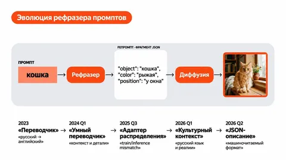

В Алисе есть модель для генерации и редактирования изображений Alice AI ART. Она может заменить лицо на фотографии или сгенерировать поздравительную открытку.
Под капотом это — сложная многостадийная система. Самые важные стадии — рефразер и диффузия. Диффузия непосредственно генерирует изображение. А рефразер переписывает запрос пользователя так, чтобы диффузия хорошо его поняла.
Алексей Кириллов из команды Alice AI ART рассказал на Data Fest в Новосибирске, как рефразер эволюционировал за два года, а мы пересказываем главное.
Переводчик
История началась в 2023 году. Тогда весь обучающий корпус для диффузии состоял исключительно из английский данных, из-за чего модель не понимала запросы на русском. Чтобы русскоязычный юзер мог пользоваться моделью, придумали простое решение: Яндекс.Переводчик.
Переводчик существовал в этой роли достаточно долго и успешно. Однако со временем у него стали всплывать проблемы на стыке русского и английского языков. Дело в том, что существуют слова, у которых есть несколько переводов с разным смыслом. Так, запрос «большие синицы» (big tits) давал неожиданный результат.
Решением стало добавлять уточняющий контекст, то есть сделать «умный переводчик». Например, писать: “bit tits are sitting on a tree”. Для обучения такого рефразера выработали пайплайн: собрать синтетический датасет с эталонными репромптами, сделать на нём SFT с Ptune, сверху шлифануть квантизацией для ускорения.
Детальные кепшены
Диффузионная модель обучается на парах «текст-картинка». Качество текста (кепшена) во много определяет качество модели, ведь если описание короткое или неточное, часть информации о картинке теряется, и модели сложнее научиться точно следовать промптам.
В какой-то момент для улучшения модели решили перейти на длинные структурированные кепшены. От прошлой версии они отличались увеличившейся в несколько раза длиной, наличием внутренней структуры и логики повествования.
Но качество просело. Родилась гипотеза, что проблема в расхождении промптов на инференсе и в обучении: модель привыкла видеть длинные промпты, а замеряем мы её на коротких. Для проверки гипотезы мы адаптировали рефразер к новому распределению кепшенов и — о чудо — всё завелось! Новый рефразер «вошел в резонанс» с новой диффузией, и метрики заметно выросли.
Так, рефразер перестал быть обособленной моделью, став неотъемлемой часть end2end-пайплайна.
Культурный контекст
Алиса — русскоязычный продукт, и когда пользователь пишет «нарисуй полицейского» он, вероятно, ожидает получить фотографию с российским полицейским.
В идеальной картине мира такое свойство должно закладываться на уровне диффузионной модели. Но это сделать сложно, потребуется пересборка всего корпуса для предобучения.
Можно поступить проще, закрепив это свойство на уровне рефразера. А именно, в нужных местах точечно дописывать слово «российский»: «российский полицейский», «российский космонавт». Несмотря на простоту, идея сработала: собрали специальную доливку к SFT, обучили, и увидели ожидаемый эффект.
Так рефразер взял на себя функцию продуктового алаймента.
JSON-кепшены
Ранее переход на длинные кепшены дал значительный прирост качества. У команды аналитики появилось желание пойти ещё дальше и уйти от текста к «машиночитамому» формату. Что если подавать в модель не текст, а JSON?
Мы проделали кропотливую работу, перебрав 18 версий промпта, — и в результате смогли выбить большой прирост по качеству. Теперь модель получала максимально детальную инструкцию: что генерировать, с какими атрибутами и взаимодействиями объектов. Ошибиться стало практически нереально.
Переход на новый формат кепшенов ожидаемо потребовал обновления рефразера. Одновременно удалось прийти к «обучению без обучения»: вместо подготовки датасета, SFT и квантизации — подбор системного промпта.
Таким образом, с развитием технологии, рефразер брал на себя всё больше и больше задач. Он прошёл путь от Яндекс.Переводчика до неотъемлой частьи всей системы, сравнявшись по значимости с диффузионной моделью.
ML Underhood
